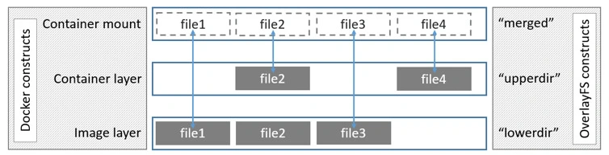
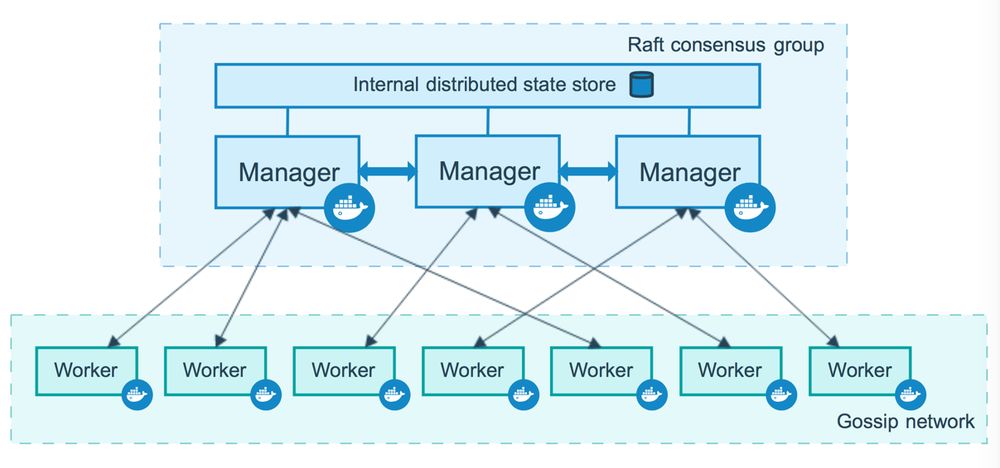
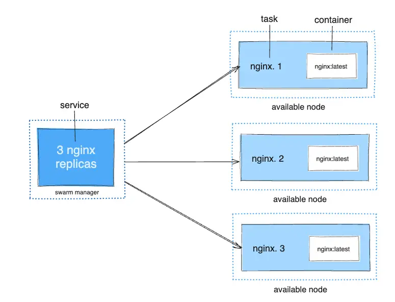

Install using the Apt repository
# Add Docker's official GPG key:
sudo apt-get update
sudo apt-get install ca-certificates curl gnupg
sudo install -m 0755 -d /etc/apt/keyrings
curl -fsSL https://download.docker.com/linux/ubuntu/gpg | sudo gpg --dearmor -o /etc/apt/keyrings/docker.gpg
sudo chmod a+r /etc/apt/keyrings/docker.gpg
# Add the repository to Apt sources:
echo \
"deb [arch="$(dpkg --print-architecture)" signed-by=/etc/apt/keyrings/docker.gpg] https://download.docker.com/linux/ubuntu \
"$(. /etc/os-release && echo "$VERSION_CODENAME")" stable" | \
sudo tee /etc/apt/sources.list.d/docker.list > /dev/null
sudo apt-get update
Simple commands
watch version
docker --version
for see if all ok
docker run hello-world
docker list
docker ps
docker run -d -p 80:80 docker/getting-started
-d run docker in detached mode
-p ports
docker images see all imgaes -a see all images and no running
docker ps see all containers -a see all containers and no running
Delete Image
docker rmi -f <IMAGE ID>
Stop and Delete all Containers
docker rm -f $(docker ps -a -q)
Delete image
docker image rm <name_of_image>
Login to hub.docker.com
docker login username <My_user> --password <your_password>
Push to Repository
before need tag IMAGE ID
docker push dan/dotnet
Save image from image to archive
docker image -o busybox busybox:lates
Import from archive
command import do new image from arhive with mew hash
docker image import -m "test" busybox
load from archive
command load old image with old hash just as his is
docker load -i busybox
Save docker to tar
docker <CONTAINER_ID> > start.tar
Load Container from tar
docker load < start.tar
Tag Image
docker tag <IMAGE ID> nginx:alpine
Enter in Docker
docker exec -it <CONTAINER_ID> sh
docker exec -it <CONTAINER_ID> /bin/bash/
docker run --rm -it --entrypoint /usr/bin/bash <Container_Name>
see version in container cat /etc/os-release
Enter in Docker and Create File (one command)
docker exec <CONTAINER_ID> sh touch file.txt
Enter in Docker and Watch processes
docker exec <CONTAINER_ID> ps -ef
Rename Container
docker rename <CONTAINER ID> <YOUR_NAME>
Commit and Create New Container
docker container commit -m "add Your commit" <Name_of_your_container> <New_Name>
Copy Files from Container
docker cp <Container ID>:/file.txt .
Copy Files in Container
docker cp busybox.txt <CONTANER ID>:/busybox.txt
Monitoring Containers
docker container stats
Docker port
docker port <CONTAINER_ID>
Docker logs
command not be work if container be stop
docker logs <CONTAINER ID>
Search images
docker search <name_of_image>
Download images for hub
docker pull <name_of_image>
View details in image
docker image inspect <name_of_image>
Mount and Volume
docker run it -v /home/dan/mount/:/mount ubuntu
command mount
docker run -it --mount type=bind,source=/home/dan/mount,destination=/mount ubuntu
Create Volume
docker volume create --name myvolume
Volume list
docker volume list
Watch Details of Volume
docker volume inspect <Name_of_Volume>
Mount Volume to Container
docker run -it --mount type=volume,source=<Name_of_Volume>,destination=/<Name_of_Volume> ubuntu
Mount Temp Volume to Container
--mount type=tmpfs,destination=/mount,tmpfs-size=1000 you can add fix disk space
docker run -it --mount type=tmpfs,destination=/mount ubuntu
or
docker run -it --tmpfs /mount ubuntu
Network
watch all Network in Docker
docker network ls
Create Network in Docker
docker network create -d bridge <Your_Name_Network>
Attach Network to Container
docker run -it --network=<Your_Name_Network> <Name_of_Container>
Attach Network to Running Container
Docker network connect none <Name_of_Container>
for disconnect
docker network disconnect <Name_of_Container>
Forward Ports from Host to Docker
docker run -d -p 2000:80 nginx
first port Host second Container
Context
List Context
docker context ls
Create context
docker context create test-test --default-stack-orchestrator=swarm --docker host=unix:///var/run/docker.sock
View in Context
docker context inspect test-test
Export Context
docker context export test-test
Import Context
docker context import test-test test-test.dockercontext
Switch between Context
* - your context used now
docker use <Name_of_Context>
Dockerfile
|Dockerfile| =Build==> |Docker Image| =Run==> |Docker Container|
FROM > RUN > ENTRYPOINT > CMD
!! CONTEINER WORK IF PID 1 WORK !!
COPY OR ADD = COPY !
FROM ubuntu
RUN apt update && apt install iputils-ping
COPY docker-entrypoint.sh /docker-entrypoint.sh
ENTRYPOINT ["ping"]
CMD ["127.0.0.1"]
all be copy in /var/www
WORKDIR /var/www
COPY file1 file2
EXPOSE <port> [<port>/<protocol>...]
EXPOSE 80
EXPOSE 80/tcp
build from archive to docker
FROM ubuntu
ENV NODE_VERSION=v16.8.0
ENV NODE_DISTRO=linux-x64
RUN apt update && apt install curl -xz-utils
WORKDIR /tmp
RUN curl https://nodejs.org/dist/$NODE_VERSION/node-$NODE_VERSION-$NODE_DISTRO.tar.xz -o node-$NODE_VERSION-$NODE_DISTRO.tar.xz
RUN mkdir -p /usr/local/lib/nodejs && tar -xJvf node-$NODE_VERSION-$NODE_DISTRO.tar.xz -C /usr/local/lib/nodejs
RUN ln -s /usr/local/lib/nodejs/node-$NODE_VERSION-$NODE_DISTRO/bin/node /usr/bin/node && \
ln -s /usr/local/lib/nodejs/node-$NODE_VERSION-$NODE_DISTRO/bin/npm /usr/bin/npm && \
ln -s /usr/local/lib/nodejs/node-$NODE_VERSION-$NODE_DISTRO/bin/npx /usr/bin/npx && \
node -v && npm version && npx -v
RUN npx create-react-app my-app
WORKDIR /tmp/my-app
EXPOSE 3000
ENTRYPOINT ["npm", "start"]
Multi-stage building
FROM ubuntu:focal AS build
RUN export DEBIAN FRONTEND=noninteractive && apt-get update && apt-get -q -y install apt-utils git cmake g++ && git clone https://github.com/toprakkeskin/Cpp-Socket-Simple-TCP-Echo-Server-Client.git && cp Cpp-Socket-Simple-TCP-Echo-Server-Client/server && cmake CMakeLists.txt && make
EXPOSE 8080/tcp
WORKDIR /Cpp-Socket-Simple-TCP-Echo-Server-Client/server
CMD ["./tcp-echo-server,8080"]
FROM ubuntu:focal AS prod
WORKDIR /server
COPY --from=build Cpp-Socket-Simple-TCP-Echo-Server-Client/server/tcp-echo-server /server
EXPOSE 8080/tcp
CMD ["./tcp-echo-server,8080"]
-t - tag name of docker for example tcpserver:latest
docker build -t tcpserver .
Image Optimization
From alpine As build
RUN apk add git gcc g++ cmake make libgcc libstdc++ && git clone https://github.com/toprakkeskin/Cpp-Socket-Simple-TCP-Echo-Server-Client.git && cp cp Cpp-Socket-Simple-TCP-Echo-Server-Client/server && cmake CMakeLists.txt && make
EXPOSE 8080/tcp
WORKDIR /Cpp-Socket-Simple-TCP-Echo-Server-Client/server
CMD ["./tcp-echo-server,8080"]
FROM alpine AS prod
RUN apk --no-cache add libstdc++ libgcc
WORKDIR root/server
COPY --from=build Cpp-Socket-Simple-TCP-Echo-Server-Client/server/tcp-echo-server root/server
EXPOSE 8080/tcp
CMD ["./tcp-echo-server,8080"]
-f from
docker build -t tcpserver -f dockerfile1 .
docker history
docker image history <image>
time of build
time docker build -t tcpserver -f dockerfile1 .
Docker Builder
from .dockerfile
docker build .
from file
docker build -t <Name_of_NEW_Image> -f <Name_of_Dockerfile>
OverlayFS and Overlay2

Docker Trust
docker trust key generate
Docker Registry
its docker hub but local
docker run -d p 6666:6666 --name local_registry registry:2
push to registry
docker tag test:boi localhost:5000/testboi
docker push local:5000/test_boi
pull from registry
docker pull local:5000/test_boi
redhut query or harbor
Docker-Compose Registry
version: '3'
services:
registry:
restart: always
image: registry:2
ports:
- "127.0.0.1:5000:5000"
environment:
REGISTRY_STORAGE_FILESYSTEM_ROOTDIRECTORY: /data
REGISTRY_AUTH: htpasswd
REGISTRY_AUTH_HTPASSWD_REALM: Registry
REGISTRY_AUTH_HTPASSWD_PATH: ./auth/registry.password
volumes:
- ./:/data
- ./auth:/auth
htpasswd create list name and password
htpasswd -B -c ./auth/registry.password dan
command with work to privet registry
login in registry
docker login https://docker.example.com
tag image
docker tag tcpserver:apline docker.example.com/tcpserver
``
upload image
```bash
docker push docker.example.com/tcpserver
download image
docker pull docker.example.com/tcpserver
DockerD
cat daemon.json
{
"debug":true
}
journalctl -xu docker.service
Change driver for docker
daemon.json
{
"storage-driver":"aufs"
}
Docker-Compose
example:
version: 'v3'
services:
application:
depends_on:
- postgresql
restart: always
image: docker.example.com/tcpserver
ports:
- "127.0.0.1:8080:8080"
postqresql:
image: postgress
environment:
POSTGRES_USER: dan
POSTGRES_PASSWORD: strongpass
POSTGRES_DB: test
ports:
- "127.0.0.1:5432:5432"
volumes:
- ./postgresql_data:/var/lib/postgresql/data
depends_on - תלוי ב
to add docker rootgroup
sudo usermod -aG docker administrator
Test
docker run -d --name ng1 -p 8080:80
See logs
docker logs -f ng1
Create Root folder
sudo mkdir /opt/nginx-compose-example
sudo chown $USER. /opt/nginx-compose-example
Example Compose file
service:
ng1:
image: nginx
port:
- "8080:80"
Run Docker-Compose
docker-compose up
to stop down
logs service
docker-compose logs -f [sevice name]
list of running container
docker-compose ps
list of docker images used docker-compose
docker-compose images
running service command
docker-compose exec [service name] [command]
Compose. Profile
example:
services:
foo:
image: foo
bar:
image: bar
depends_on:
- bar
profiles:
- test
baz:
images: baz
depends_on:
- bar
profiles:
- test
zot:
image: zot
depends_on:
- bar
profile:
- debug
$ docker compose --profile test up
$ COMPOSE_PROFILES=test docker compose up
$
$ docker compose --profile test --profile debug up
$ COMPOSE_PROFILES=test, debug docker compose up
$
$ # profile test activated
$ docker compose up baz
$
$ # profle test and service bar
$ docker compose up baz
$
$ # invalid model
$ docker compose up zot
$
$ zor bar and baz activated
$ docker compose --profile test up zot
Compose. Environment
Map syntex:
environment:
RACK_ENV: development
SHOW: "true"
USER_INPUT:
Array syntex:
environment:
- RACK_ENV: development
- SHOW=true
- USER_INPUT
Compose. File .env
$ head .env
##### NGiNX ##################
NGINX_SSL_PATH=./nginx/ssl/
###### TO-DO APP CONFIG ##############
NGINX_TODO_HOST_HTTP_PORT=8081
NGINX_TODO_HOST_HTTPS_PORT=8081
NGINX_TODO_SITE_PATH=./nginx/sites/todo.conf
NGINX_TODO_HOST_LOG_PATH=./../logs/nginx_todo
APP_CODE_TODO_PATH_HOST=./../todo
APP_CODE_TODO_PATH_CONTAINER=/var/www/todo
$ head docker-compose.yml
version: '2'
service:
env_file .env
nginx_todo:
build:
context: ./nginx
volumes:
- ${APP_CODE_TODO_PATH_HOST}:${APP_CODE_TODO_PATH_CONTAINER}
- ${NGINX_TODO_HOST_LOG_PATH}:/var/log/nginx
- ${NGINX_TODO_SITE_PATH}:/etc/nginx/site-available/todo.conf
Compose. Nеtwork
services:
frontend:
image: awesome/webapp
network:
- front-tier
- back-tier
networks:
front-tier:
back-tier:
network
outside:
external: true
Compose. Secrets
services:
frontend:
image: awesome/webapp
sercets:
- server-certificate
secrets:
server-certificate:
file: ./server.cert
Compose. Healtchecks
test: ["CMD","curl", "-f" "http://localhost"]
interval: 1m30s
timeout: 1m30s
retries: 3
start_period: 40s
Compose. Volumes
services:
ng1:
images: nginx
volumes:
- type: bind
source: /tmp
target: /tmp/ng1_tmp
ng2:
image: nginx
volumes:
- type: bind
source: /tmp
target: /tmp/ng2_tmp
Compose. Full Example
version "3.1"
services:
reverse_proxy:
build: ./reverse_proxy
user: nginx
ports:
- "433:433"
networks:
- front-tier
secrets:
- revprox_cert
- revprox_key
database:
build:
context: ./database
image: atsea_db
user: postgres
environment:
POSTGRES_USER: dordonuser
POSTGRES_PASSWORD_FILE: /run/secrets/postgres_password
POSTGRES_DB: atsea
ports:
- "5432:5432"
network:
- back-tier
secrets:
- postgres_password
appserver:
build:
context: app
dockerfile: Dockerfile
image: atsea_app
user: gordon
ports:
- "8080:8080"
- "5005:5005"
networks:
- front-tier
- back-tier
secrets:
- postgres_password
networks:
front-tier:
back-tier:
payment:
# driver: overlay
secrets:
postgres_password:
file: ./debsecrets/postgres_password
payment_token:
file: ./devsecrets/payment_token
revprox_cert:
file: ./certs/domain.crt
revprox_key:
file: ./certs/domain.key
Docker Swarm
min need 2 node

Services, tasks, and containers When you deploy the service to the swarm, the swarm manager accepts your service definition as the desired state for the service. Then it schedules the service on nodes in the swarm as one or more replica tasks. The tasks run independently of each other on nodes in the swarm.
For example, imagine you want to load balance between three instances of an HTTP listener. The diagram below shows an HTTP listener service with three replicas. Each of the three instances of the listener is a task in the swarm.

Docker Swarm Stack
example:
version: 'v3'
services:
application:
depends_on:
- postgresql
restart: always
image: docker.example.com/tcpserver
ports:
- "127.0.0.1:8080:8080"
deploy:
mode: replicated
replicas: 2
postqresql:
image: postgress
environment:
POSTGRES_USER: dan
POSTGRES_PASSWORD: strongpass
POSTGRES_DB: test
ports:
- "127.0.0.1:5432:5432"
volumes:
- ./postgresql_data:/var/lib/postgresql/data
deploy:
mode: replicated
replicas: 2
docker stack deploy -c docker-compose.yml --with-registry-auth application
do add to group root user docker
sudo usermod -aG docker administrator
to change name
nano /etc/hostname
to create master node, key --advertise-addr 192.168.0.1
docker swarm init
after Create Master сreated link copy past to other machine to add Worker or Manager
docker swarm join --tokern <Token> <IP>:<Port>
Docker Node List
docker node ls
add replication to hosts
docker update --replicas 5 [image:latest]
remove services
docker service rm tcpserver
for other docker node pull containers need local repository
docker service create --name registry --publish publish=5000,target=5000 registry:2
for tag image
docker tag sw1 192.168.88.113:5000/sw1
For push to local repository
docker image push 192.168.88.113:5000/sw1
For disable SSL Cetificates in local repository
sudo nano /etc/docker/daemon.json
{"insecure-registries": ["192.168.88.113:5000"]}
After in need restart docker daemon and push image
sudo systemctl restart docker
to run docker swarm container
docker service create --replicas 1 --publish 8000:8000 --name sw1 192.168.88.113/sw1
This command lists services are running in the swarm
docker service ls
Lists the tasks that are running as part of the specified services.
docker service ps sw1
To Scale containers
docker service scale SERVICE=REPLICAS
docker service scale sw1=4
for update containers
docker service update --image 192.168.88.113/sw1 sw1
to remove all service
docker service rm sw1
Like docker-compose for docker swarm (stack.yml)
file stack.yml
for example:
version: "3.9"
services:
web:
image: 192.168.88.113:5000/sw1
ports:
- "8000:8000"
network:
- "back-tier"
deploy:
mode: replicated
replicas: 2
redis:
images: redis:alphane
network:
- back-tier
networks:
back-tier:
driver: overlay
docker stack deploy --compose-file stack.yml sw1
to stop all
docker stack rm sw1
Docker Network
for connect to network
docker network connect <my-net> my-nginx
for disconnect
docker network connect <my-net> my-nginx
Overlay
create overlay lan for use with service Swarm
docker network create -d overlay my-overlay
To create an overlay network which can be used by swarm services or standalone containers to communicate with other standalone containers running on other Docker daemons, add the --attachable flag:
docker network create -d overlay --attachable my-attachable-overlay
You can use the overlay network feature with both --opt encrypted --attachable and attach unmanaged containers to that network:
docker network create -d --opt encrypted --driver overlay --attachable my-attachable-multi-host-network
MacVlan
To create a macvlan network which bridges with a given physical network interface, use --driver macvlan with the docker network create command. You also need to specify the parent, which is the interface the traffic will physically go through on the Docker host.
$ docker network create -d macvlan \
--subnet=172.16.86.0/24 \
--gateway=172.16.86.1 \
-o parent=eth0 pub_net
Bridge mode
If you need to exclude IP addresses from being used in the macvlan network, such as when a given IP address is already in use, use --aux-addresses:
$ docker network create -d macvlan \
--subnet=192.168.32.0/24 \
--ip-range=192.168.32.128/25 \
--gateway=192.168.32.254 \
--aux-address="my-router=192.168.32.129" \
-o parent=eth0 macnet32
802.1Q trunk bridge mode
If you specify a parent interface name with a dot included, such as eth0.50, Docker interprets that as a sub-interface of eth0 and creates the sub-interface automatically.
$ docker network create -d macvlan \
--subnet=192.168.50.0/24 \
--gateway=192.168.50.1 \
-o parent=eth0.50 macvlan50
Use an IPvlan instead of Macvlan
In the above example, you are still using a L3 bridge. You can use ipvlan instead, and get an L2 bridge. Specify -o ipvlan_mode=l2 .
$ docker network create -d ipvlan \
--subnet=192.168.210.0/24 \
--subnet=192.168.212.0/24 \
--gateway=192.168.210.254 \
--gateway=192.168.212.254 \
-o ipvlan_mode=l2 -o parent=eth0 ipvlan210
Use IPv6
If you have configured the Docker daemon to allow IPv6, you can use dual-stack IPv4/IPv6 macvlan networks.
$ docker network create -d macvlan \
--subnet=192.168.216.0/24 --subnet=192.168.218.0/24 \
--gateway=192.168.216.1 --gateway=192.168.218.1 \
--subnet=2001:db8:abc8::/64 --gateway=2001:db8:abc8::10 \
-o parent=eth0.218 \
-o macvlan_mode=bridge macvlan216
Generate SSL certificat for docker
mkdir ssl
cd ssl
nano /etc/ssl/openssl.cnf
add ip your IP
[ v3_ca ]
subjectAltName = IP:85.41.11.8
generate ssl key
openssl req -x509 -nodes -days 365 -newkey rsa:2048 -keyout selfsigned.key -out selfsigned.crt
openssl dhparam -out dhparam.pem 2048
mkdir site-available
server {
# listen 443 default deferred; # for Linux
# listen 443 default accept_filter=httpready; # for FreeBSD
listen 443 http2; # for OSX
server_name docker.example.com;
client_max_body_size 4G;
access_log /var/log/nginx/docker.example.com.access.log;
error_log /var/log/nginx/docker.examlpe.matveev.com.error.log error;
server_tokens off;
ssl_session_cache shared:SSL:50m;
ssl-session_tickets off;
ssl_stapling on;
ssl_stapling_verify on;
ssl_protocols TLSv1.3 TLSv1.2;
ssl_prefer_server_ciphers on;
add